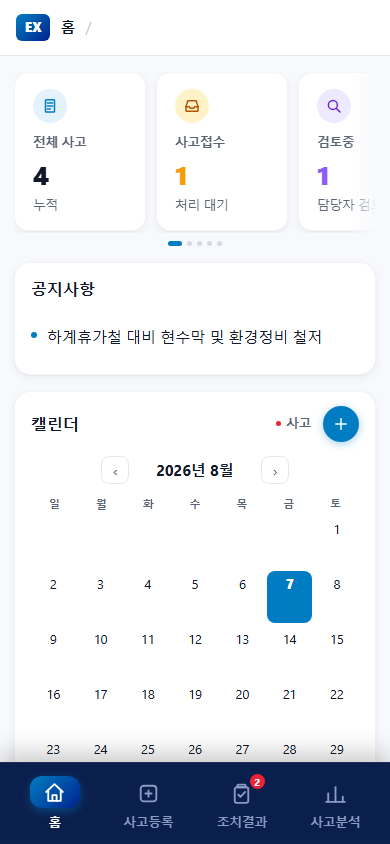
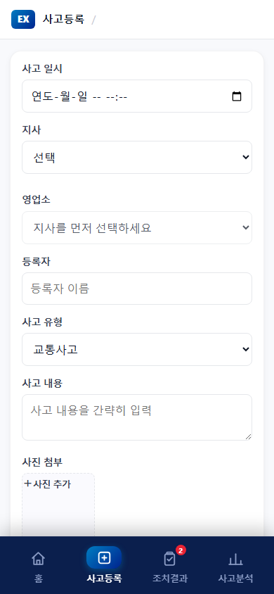
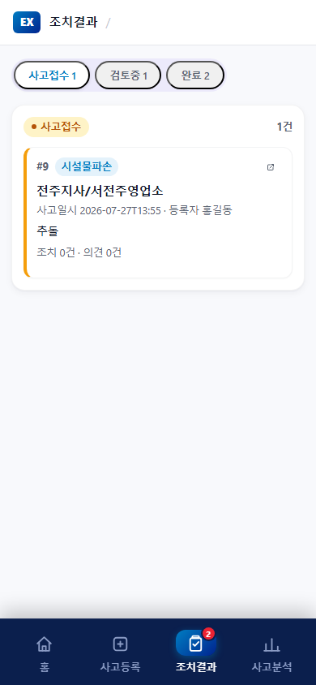
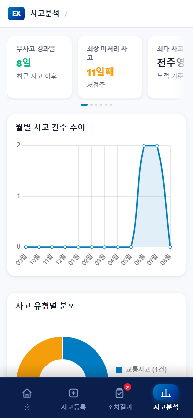

사고보고시스템
모바일 앱 설치 및 사용 매뉴얼
영업소 · 지사 · 본부 · 자회사 전 직원용
https://tkrhqhrh.onrender.com
위 QR코드를 스캔하면 바로 접속할 수 있습니다.
사고보고시스템은 스마트폰 브라우저에서 바로 사용할 수 있는 웹 앱으로, 별도의 스토어 설치 없이 홈 화면에 추가하면 일반 앱처럼 아이콘을 눌러 실행할 수 있습니다.
영업소·지사·본부·자회사 소속과 관계없이 모든 직원이 동일한 화면과 기능을 사용합니다. 별도의 로그인 절차 없이 소속(지사/영업소)만 선택하면 바로 사고를 등록하고 조회할 수 있습니다.
접속 주소: https://tkrhqhrh.onrender.com
표지의 QR코드를 스캔하거나, 스마트폰 브라우저 주소창에 위 주소를 직접 입력해도 됩니다.
주요 기능
- 홈 — 사고 현황 요약, 공지사항, 사고 캘린더 확인
- 사고등록 — 발생한 사고를 사진과 함께 등록
- 사고현황 — 등록된 사고 목록 조회 및 통계 분석
한 번만 설치해두면 이후에는 홈 화면 아이콘을 눌러 바로 실행할 수 있습니다.
주의: 카카오톡·문자 메시지의 링크를 바로 눌러 열면 앱 내장 브라우저(인앱 브라우저)로 열려 "홈 화면에 추가"가 보이지 않을 수 있습니다.
이 경우 화면 오른쪽 위 메뉴에서 "다른 브라우저로 열기"(또는 "Safari로 열기" / "Chrome으로 열기")를 선택한 뒤 위 순서를 진행하세요.
하단 홈 / 사고등록 / 사고현황 3개 탭으로 모든 기능을 이용합니다.
3-1. 홈 (대시보드)

- 상단 카드에서 전체 사고 / 사고접수 / 검토중 등 현황을 한눈에 확인합니다. (좌우로 넘겨 더 볼 수 있음)
- 공지사항에서 본부·지사의 안내 사항을 확인합니다.
- 캘린더에 사고가 있는 날짜는 빨간 점으로 표시됩니다. 날짜를 누르면 하단에 해당일 사고 목록이 나타납니다.
- 오른쪽 위 + 버튼을 누르면 선택한 날짜가 자동으로 채워진 사고등록 화면으로 이동합니다.
3-2. 사고등록

| 사고 일시 | 사고가 발생한 날짜와 시간 |
|---|
| 지사 | 소속 지사 선택 (전주/부안/무주/논산/진안/보령) |
|---|
| 영업소 | 지사를 먼저 선택하면 소속 영업소 목록이 나타남 |
|---|
| 보고자 | 보고하는 직원 이름 |
|---|
| 사고 유형 | 교통사고 / 시설물파손 / 기기이상 / 부상자 발생 / 기타 |
|---|
| 사고 내용 | 발생 경위를 간략히 입력 |
|---|
| 조치 사항 | 취한 조치 또는 예정 사항 입력 |
|---|
| 사진 첨부 | +사진추가로 현장 사진을 여러 장 첨부 가능 |
|---|
모든 항목 입력 후 화면 아래 등록 버튼을 누르면 저장되며, 자동으로 사고현황 화면으로 이동합니다.
3-3. 사고현황 — 사고 목록

- 상단 전체 / 사고접수 / 검토중 / 완료 버튼으로 상태별로 걸러볼 수 있습니다.
- 목록의 사고 카드를 누르면 상세 내용과 댓글을 확인할 수 있습니다.
- 상태 의미:
사고접수등록 직후, 담당자 검토 대기
검토중담당자가 확인 중
완료처리 종료
3-4. 사고현황 — 데이터 분석

- "사고 목록" 옆 "데이터 분석" 탭에서 확인합니다.
- 평균 월 사고, 최다 사고 장소, 최다 사고 유형을 카드로 요약해서 보여줍니다.
- 월별 사고 건수 추이 그래프와 사고 유형별 분포 도넛 차트로 경향을 파악할 수 있습니다.
홈 화면에 추가했는데 아이콘을 눌러도 안 열려요.
인터넷(Wi-Fi/데이터) 연결 상태를 확인해 주세요. 그래도 안 되면 아이콘을 삭제한 뒤 2장의 설치 방법을 다시 따라 해 주세요.
로그인을 해야 하나요?
별도 로그인은 없습니다. 사고등록 시 소속(지사/영업소)과 보고자 이름만 입력하면 됩니다.
사진이 업로드되지 않아요.
네트워크 상태를 확인하고, 사진 개수를 줄이거나 Wi-Fi 환경에서 다시 시도해 주세요.
카카오톡으로 받은 링크를 눌렀는데 설치 메뉴가 안 보여요.
인앱 브라우저에서는 설치할 수 없습니다. 오른쪽 위 메뉴에서 "다른 브라우저로 열기"를 선택한 후 다시 시도해 주세요.
지사에 따라 화면이 다른가요?
아니요. 영업소·지사·본부·자회사 모든 직원이 동일한 화면과 기능을 사용하며, 사고등록 시 소속만 다르게 선택하면 됩니다.